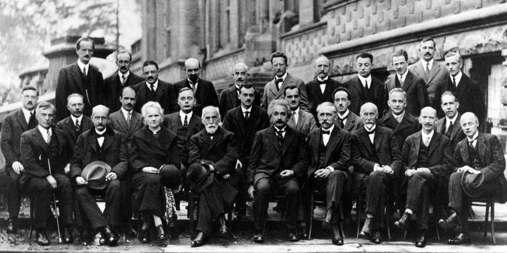

Fisika Atom

Saya akui, di tahun pertama perkuliahan, mata kuliah fisika atom bukanlah mata kuliah favorit saya. Namun, hal itu berubah ketika saya mulai belajar tentang nanoteknologi. Di mata kuliah tersebut, fisika atom tampak begitu relevan dan menarik untuk saya pelajari kembali. Proses belajar itu berlanjut hingga saya memutuskan untuk mengambil ulang mata kuliah fisika atom di penghujung masa studi. Bagi saya, fisika atom merupakan permulaan yang baik bagi mahasiswa yang tertarik pada fenomena fisika di ranah kuantum.
[Gambar: Fifth Solvay International Conference]
Daftar Isi
Bagian 1. Planck
Bagian 2. Stefan
Bagian 3. Wien
Bagian 4. Einstein
Bagian 5. Compton
Bagian 6. Heisenberg
Bagian 7. Thomson
Bagian 8. Rutherford
Bagian 9. Bohr